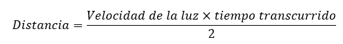
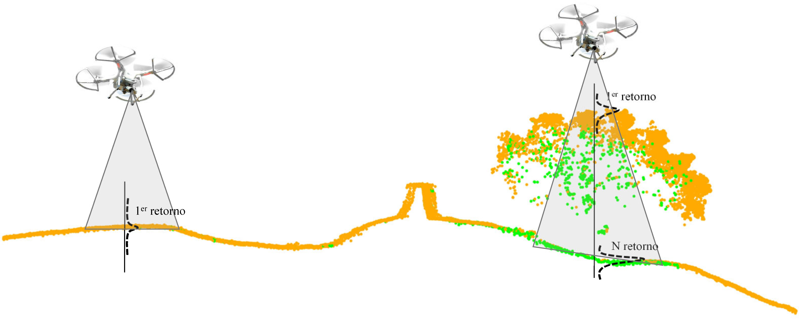

Conceptos previos
LiDAR (Light Detection And Ranging) es una tecnología de detección remota relativamente nueva que nos permite adquirir entidades en 3D. Es una técnica de teledetección que utiliza la luz de láser para obtener una muestra densa de la superficie de la tierra con mediciones de x, y, z.
LiDAR es un sensor óptico activo que emite y recibe un pulso láser. El reflejo del láser del objetivo lo detectan y analizan los receptores, que registran el tiempo exacto desde que el pulso láser dejó el sistema hasta cuando regresó para calcular la distancia entre el sensor y el objetivo. Dicha distancia, combinada con la información posicional (GPS e INS) se transforma en coordenadas tridimensionales reales del objetivo en el espacio.

Los pulsos láser emitidos desde un sistema LiDAR se reflejan desde objetos sobre y por encima de la superficie del suelo: vegetación, edificios, etc. Un pulso láser emitido puede regresar al sensor LiDAR como uno o muchos retornos. Cualquier pulso láser emitido, que encuentre varias superficies en las que reflejar a medida que viaja hacia el suelo, se divide en tantos retornos como superficies reflectoras haya encontrado:
